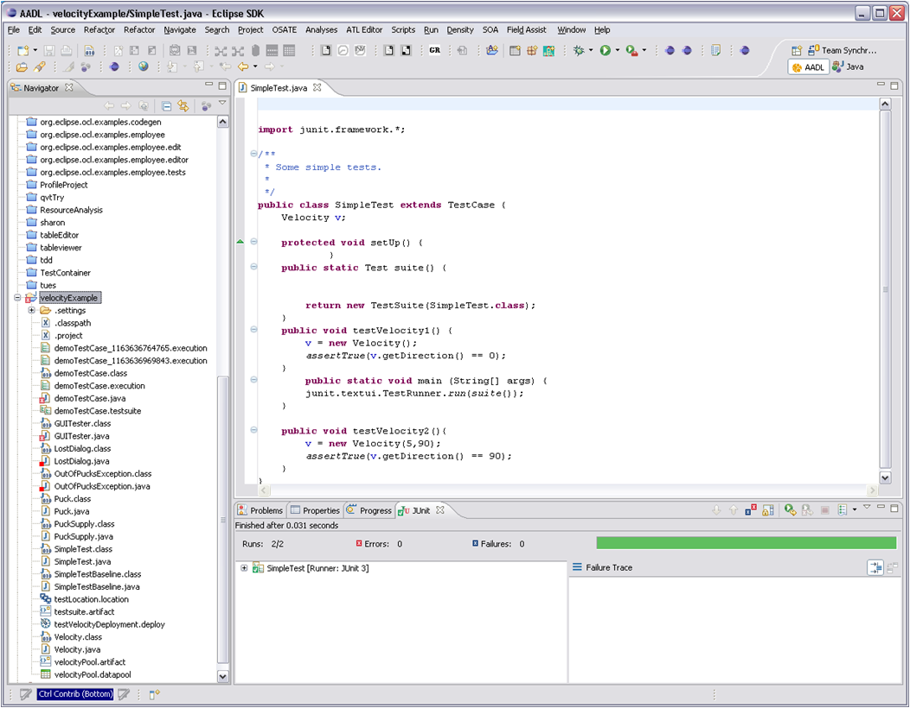
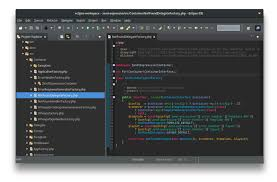

automatiseerimiseks.
programmeerimises.
"Alumise taseme" CASE vahendid keskenduvad teostele, kus mudelitest saab tegelik tarkvaratoode.
Toetavad andmebaasi struktuuri genereerimist, koodi genereerimist, testide läbiviimist,
koodi versioonihaldust, konfiguratsioonihaldust, pöördprojekteerimist jms.
Need vahendid on ka olulised vigade avastamisel ja parandamisel, kuna võimaldavad tarkvara
kontrollida erinevates arenduse faasides ning tagada töökindluse. Paljud tööriistad
on ka automatiseeritud, mis omakorda vähendab käsitsi tehtavaid toiminguid ja tõstab
arendusprotsessi tõhusust.
Viited allikale: e-õppearhiiv
| Programmi nimi | Programmi logo | Kirjeldus | Programmi vaade |
|---|---|---|---|
| JUnit |
|
JUnit kasutatakse Java programmeerimiskeelte testide automatiseerimiseks. |
 |
| Eclipse |
|
Eclipse on integreeritud arenduskeskkond, mida kasutatakse programmeerimises. |
 |